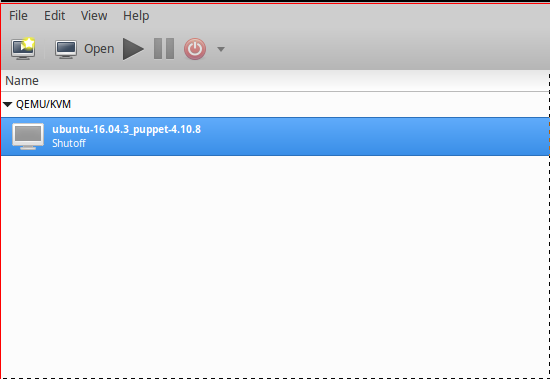

Intro
Re-pack contains a collection of packer templates for creating Re-core ready images for AWS, Digitalocean and KVM hypervisors/services.
Build
Make sure to install the latest Packer first and then run:
# build Ubuntu 16.04 AMI
$ cd src/aws/ubuntu-16.04
$ packer build -var 'aws_access_key=<access-key>' -var 'aws_secret_key=<secret-key>' template.json
# build Ubuntu 16.04 Digitalocean image
$ cd src/digital/ubuntu-16.04
$ packer build -only=digitalocean -var 'api_token=<your token>' template.json
# build Ubuntu 16.04 KVM image
$ cd src/kvm
$ packer build -var 'user=<your user>' -var 'password=<your pass>' ubuntu-16.04-server-amd64.json
# or Ubuntu 16.04 desktop
$ packer build -var 'user=<your user>' -var 'password=<your pass>' ubuntu-16.04-desktop-amd64.json
Deploy
We need to deploy our templates only when creating KVM images, we do so by:
$ cp output/ubuntu-16.04.3_puppet-4.10.8.img /var/lib/libvirt/images/
Once that done create a new VM instance from the IMG file we just copied:

This VM instance will be the source template from which new VM instances are created.
Note:
- Make sure to add a bridged networking interface in addition to the NAT interface it already has.
- Re-core uses the following naming convention for images/templates {os-name}-{os-version}_puppet-{puppet-version}.